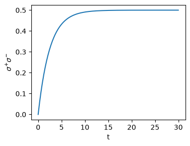
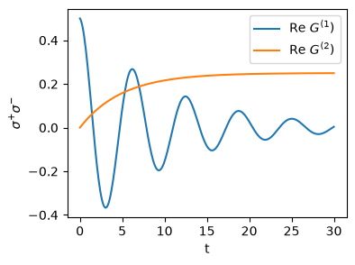
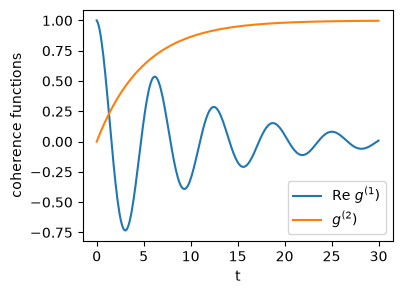
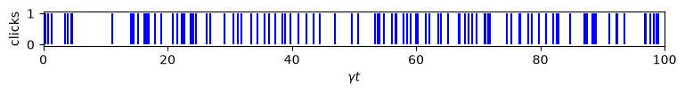
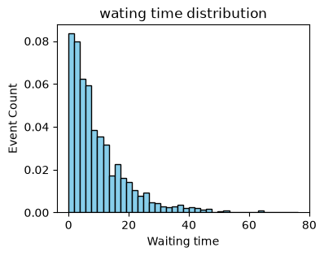

10. Numerical calculation using QuTip#
A summary of QuTip usage for computing open quantum system is given. Only modules and functions used in this note are included.
10.1. Basics#
10.1.1. Loading QuTip modules#
First of all, numpy and matplotlib must be loaded since QuTip uses them. It is assumed that they are loaded as follows:
import numpy as np
import matplotlib.pyplot as plt
Like other python packages, there are many ways to load the modules in QuTip.
Load everything with alias
qt. This method avoids name conflict. You can use any alias you want.
import qutip as qt
Load everything without alias. Simple and convenient but it may cause name conflict.
from qutip import *
Load only modules you use.
from qutip import (
basis, qeye, tensor, sigmam, sigmap, sigmaz,
mcsolve, expect
)
10.1.2. Quantum objects#
Mathematically, elements of quantum mechanics are state vector: \(|\psi\rangle\), density operator: \(\rho\), and operators as observables: \(H\). In traditional numerical methods, they are all expressed as a matrix. QuTip treats them as different python objects known as qantum objects or Qobj. Each object consists of at least four parts:
type: ket \(|\psi\rangle\), bra \(\langle\psi|\), operator \(\hat{O}\), super operator \(\mathcal{L}\).
dimension: size of the object, for example a 4-by-4 matrix [[4],[4]] or a tensor [[2,2],[2,2]] [both have the same shape(4,4)].
shape: shape of the object. This is the shape of data, which is essentially the shape of an array.
data: actual data in a matrix form.
You cannot define quantum object as a simple matrix. For example, assigning a column matrix does not create a state vector. There are two methods to create desired quantum objects.
Use a build-in function such as
basis()for a qubit state vector andsigmaz()for the Pauli operator \(\sigma^z\).Convert an array to a quantum object using
Qobj()function.
The following example generate state vector \(|\psi\rangle = (|0\rangle + |1\rangle)/\sqrt{2} = \frac{1}{\sqrt{2}} \begin{pmatrix}1\\1\end{pmatrix}\) and an operator \(A = \sigma^x + \sigma^z = \begin{pmatrix} 1& 1\\1 & -1\end{pmatrix}\). Printout shows their object type.
Using the build-in functions
import numpy as np
from qutip import *
psi = (basis(2,0) + basis(2,1))/np.sqrt(2)
print(psi)
A = sigmax()+sigmaz()
print(A)
Quantum object: dims=[[2], [1]], shape=(2, 1), type='ket', dtype=Dense
Qobj data =
[[0.70710678]
[0.70710678]]
Quantum object: dims=[[2], [2]], shape=(2, 2), type='oper', dtype=CSR, isherm=True
Qobj data =
[[ 1. 1.]
[ 1. -1.]]
Converting from arrays
psi0 = np.array([1,1])/np.sqrt(2)
psi = Qobj(psi0)
print(psi)
A0 = np.array([[1,1],[1,-1]])
A = Qobj(A0)
print(A)
Quantum object: dims=[[2], [1]], shape=(2, 1), type='ket', dtype=Dense
Qobj data =
[[0.70710678]
[0.70710678]]
Quantum object: dims=[[2], [2]], shape=(2, 2), type='oper', dtype=Dense, isherm=True
Qobj data =
[[ 1. 1.]
[ 1. -1.]]
To convert a quantum object to a numpy array, use the method full. For example, if A is a Qobj, A.full() is a standard numpy array.
print(A.full())
[[ 1.+0.j 1.+0.j]
[ 1.+0.j -1.+0.j]]
Quantum Object
Operation between incompatible quantum objects is not allowed in QuTip. Suppose that two operators A and B are expressed in 4-by-4 matrix. Their shape is (4,4). However, if A is a tensor product of 2-by-2 matrices and B is not, their dimensions are [[2,2],[2,2]] and [[4],[4]],respectively. Hence they belong to different quantum objects and thus A+B is not allowed due to incompatible dimensions.
10.1.3. Standard operations on quantum objects#
standard operators
identity:
qeye(D)where D is the dimension of Hilbert space.Pauli operators \(\sigma^x\), \(\sigma^y\), \(\sigma^z\):
sigmax(),sigmay(),sigmaz()raising and lowering operator \(\sigma^+\), \(\sigma^-\):
sigmap(),sigmam()
operations on operators
adjoint: \(A^\dagger\):
A.dag()trace: \(\text{tr}(A)\):
A.tr()partial trace: \(\text{tr}_{j}(A)\):
A.ptrace(j)wherejis the index for the subsystem.tensor product \(C = A \otimes B\):
C=tensor(A,B)eigenvalues & eigenvectors of operator:
A.eigensystems()which returns eigenvalues \(\lambda_i\) and eigenvevtors \(|u_i\rangle\) aslam, vec = A.eigensystems()
standard states (based on qubits)
basis kets:
basis(D,j)whereDis the dimension andjfor the j-th ket.single state \((|01\rangle - |10\rangle)/\sqrt{2}\):
singlet_state()(This is equivalent tobell_state('11').general Bell state:
\((|00\rangle + |11\rangle)/\sqrt{2}\): bell_state(‘00’)
\((|00\rangle - |11\rangle)/\sqrt{2}\): bell_state(‘01’)
\((|01\rangle + |10\rangle)/\sqrt{2}\): bell_state(‘10’)
\((|01\rangle - |10\rangle)/\sqrt{2}\): bell_state(‘11’)
random ket:
random_ket(D)random density operator:
random_dm().
operations on states
bra: if
psiis a ket, the corresponding bra is just its adjoint:psi.dag(). The inner product \(\langle\phi|\psi\rangle\) isphi.dag()*psi.norm:
psi.norm()normalization:
psi.unit()generating a density operator from a ket \(\rho = |\psi\rangle\langle\psi|\):
ket2dm(psi).
expectation values and matrix elements
expectation value of A with state ket, \(\langle A \rangle = \langle\psi|A|\psi\rangle\):
expect(A,psi).expectation value of A with density matrix, \(\langle A \rangle = \text{tr}(A \rho)\):
expect(A,rho).matrix element of A, \(\langle\psi |A| \phi \rangle\):
A.matrix_element(psi, phi).
10.2. Quantum master equation#
QuTip includes quantum master equation solvers and many utilities to evaluate physical quantities using the output from the solver. Here is a brief summary of basic operations.
10.2.1. Defining a quantum master equation#
We want to solve a quantum master equation \(\frac{d}{dt}\rho = \mathcal{L} \rho\) where \(\mathcal{L}\) is a Liouville super operator (Liouvillian). (See Section 11.) The Liouville superoperators are uniquely determined by the system Hamiltonian \(H\) and a set of dissipators \(\mathcal{D}\) such that
where
Many QuTip utilities are tuned for \(\gamma_{ij} = \gamma_{j} \delta{ij}\). You can always eliminate the off-diagonal terms by diagonalizing \(\gamma_{ij}\). There is a brute force method without diagonalization, which we discuss later.
Defining Liuovillian
Here the Liouvillian is assumned to take the following standard form
You can see that the Liouvillian is uniquely defined by the system Hamiltonian \(H\) and the collapse operators \(\sqrt{\gamma_{j}} A_{j}\). In QuTip we define the Liouvillian using a function liouvillian(H,c_ops) where H is a system Hamiltonian and c_ops is a list of collapse operators. The following example construct a Liouvillian with \(H=\frac{\omega}{2}\sigma^z\) and two collapse operators \(\sqrt{\gamma} \sigma^{+}\) and \(\sqrt{\gamma} \sigma^{-}\). The print out shows that the type of Liouvillian is super, meaning super operator.
import numpy as np
from qutip import *
omega = 1.0
gamma = 0.1
H = omega/2 * sigmaz()
c_ops = [np.sqrt(gamma)*sigmap(), np.sqrt(gamma)*sigmam()]
L = liouvillian(H,c_ops)
print(L)
Quantum object: dims=[[[2], [2]], [[2], [2]]], shape=(4, 4), type='super', dtype=CSR, isherm=False
Qobj data =
[[-0.1+0.j 0. +0.j 0. +0.j 0.1+0.j]
[ 0. +0.j -0.1+1.j 0. +0.j 0. +0.j]
[ 0. +0.j 0. +0.j -0.1-1.j 0. +0.j]
[ 0.1+0.j 0. +0.j 0. +0.j -0.1+0.j]]
Steady state
The solution to any quantum master equation is known to asymptotically approaches to a steady state \(\rho_{ss}\) which satisfies \(\mathcal{L}\rho_{ss} = 0\). As we saw in the previous sections, the steady state plays important roles in quantum optics. We can find it without explicitly solving the master equation using steadystate(L) function in QuTip. The following example use the Liouvillian defined in the above.
rho_ss = steadystate(L)
print(rho_ss)
Quantum object: dims=[[2], [2]], shape=(2, 2), type='oper', dtype=Dense, isherm=True
Qobj data =
[[0.5 0. ]
[0. 0.5]]
Time evolution of density operator
Now, we solve the quantum master equation and find the time-evolution of density operator. First, we need to a set of sampling times. The density operator and other information at the given times are recorded and returned by mesolve(). This function takes various arguments some are required and others are optional. Here is a minimum set of rquired qurgument:
result = mesolve(H, psi0, times, c_ops, e_ops=...)
where \(H\) is the system Hamiltonian, psi0 is an initial wavefunction, times is an array of sampling times, c_ops is a list of collapse operators. These four operators are positional arguments. e_ops is a list of observables to be measured. It is a keyword only argument. It should be used as e_ops = list-of-operators. If we don’t want to mesolve to evaluate expetacion values of the observables, use e_ops = None.
If the initial state is a mixed state, density operator rho0 can be used in place of psi0.
result = mesolve(H, rho0, times, c_ops, e_ops=...)
If a Liouvillian is already defined, you can use it in place of Hamiltonian as
result = mesolve(L, rho0, times, c_ops, e_ops=...)
This is important when off-diagonal disppators are needed since we must construct a Liouvillian manually.
psi0 = basis(2,1)
times = np.linspace(0, 30, 300)
e_ops = [sigmaz(),sigmap()*sigmam()]
result = mesolve(H, psi0, times, c_ops, e_ops=e_ops)
Extracting density operators
When e_ops is specified, mesolve computes the expectation value of the observables, which may consume a large memory. Then, the density operator may be thrown away after computing the expectation values. In order to store the density operator, 1) Do not specify observables (e_ops = None) or 2) specify an option as options={"store_states": True}). The latter stores both expectation values and density operators, which may need a large memory space depending on the size of the problem. Note that if we have density operator, we can calculate the expectation values manually.
The following example computes the time evolution of density operator only.
result = mesolve(L, psi0, times, c_ops, e_ops=None)
# density operator at all sampling times
rho = result.states
# density operator at the final time
rho_final = result.states[-1]
print(rho_final)
Quantum object: dims=[[2], [2]], shape=(2, 2), type='oper', dtype=Dense, isherm=True
Qobj data =
[[0.49999642 0. ]
[0. 0.50000358]]
Extracting expectation values
Next we compute the expectation value of number operator \(n=\sigma^{+}\sigma^{-}\). The result is stored in result.expect[0]. If you specified multiple observables, the second observable is given by result.expect[1] and so on.
result = mesolve(L, psi0, times, c_ops, e_ops=sigmap()*sigmam())
n = result.expect[0]
import matplotlib.pyplot as plt
plt.figure(figsize=(4,3))
plt.plot(times,n)
plt.xlabel("t")
plt.ylabel(r"$\sigma^{+}\sigma^{-}$")
plt.show()

Computing temporal correlation functions
To compute temporal correlation function, we need to use the quantum regression theorem (see Section 11. QuTip has several functions which computes a correlaion function without explicitely envoking mesolve. Two convenient ones are
correlation.correlation_2op_1t(H, psi0, times, c_ops, A, B)for \(\langle A(\tau)B(0) \rangle\):correlation.correlation_3op_1t(H, psi0, times, c_ops, A, B, C)for \(\langle A(0)B(\tau)C(0 \rangle\):
where A, B< and C are operators. Similarly to mesolve, H can be L and psi0 can be rho0.
We are particularly interested in average over steady state, which is denoted as \(\langle \cdots \rangle_{ss}\). These functions calcuate the correlation starting from psi0 or rho0. To get the steady state correlation function, we must start with a steady state. We already know how to get a steady state. Just plugin it. Or you can set None in place of psi0. Then, QuTiP uses a steady state automatically.
For the case of two operators, there is a special function for steady state correlation: correlation.correlation_ss(H, times, c_ops, A, B).
The following example compute \(G^{(1)}(\tau) = \langle \sigma^{+}(t+\tau) \sigma^{-}(t)\rangle_{ss}\) and \(G^{(2)}(\tau) = \langle \sigma^{+}(t) \sigma^{+}(t+\tau) \sigma^{-}(t+\tau)\sigma^{-}(t)\rangle_{ss}\) .
G1 = correlation.correlation_2op_1t(H, None, times, c_ops, sigmap(), sigmam())
G2 = correlation.correlation_3op_1t(H, None, times, c_ops, sigmap(), sigmap()*sigmam(), sigmam())
plt.figure(figsize=(4,3))
plt.plot(times,G1.real,label=r"Re $G^{(1})$")
plt.plot(times,G2.real,label=r"Re $G^{(2})$")
plt.xlabel("t")
plt.ylabel(r"$\sigma^{+}\sigma^{-}$")
plt.legend(loc=1)
plt.show()

10.2.2. Coherence functions#
You can calculate the first-order and second-order coherence functions easily using the above QuTip functions. However, there are wrapper routines for \(g^{(1)}(\tau)\) and \(g^{(2)}(\tau)\). They calls the functions explained above. Then, normalize the correlation appropriately.
coherence_function_g1(H, None, times, c_ops, a)for \(g^{(1)}(\tau) = \frac{\langle a^{\dagger}(t+\tau) a(t)\rangle_{ss}}{\langle a^{\dagger}(t) a(t)\rangle_{ss}}\)coherence_function_g2(H, None, times, c_ops, a)for \(g^{(2)}(\tau) = \frac{\langle a^{\dagger}(t)a^{\dagger}(t+\tau) a(t+\tau) a(t)\rangle_{ss}}{(\langle a^{\dagger}(t) a(t)\rangle_{ss})^2}\)
These functions actually return both \(G^{(n)}(\tau)\) and \(g^{(n)}(\tau)\).
If cross correlation between different modes are included, these wrapper functions won’t work.
g1, G1 =coherence_function_g1(H, None, times, c_ops, sigmap())
g2, G2 =coherence_function_g2(H, None, times, c_ops, sigmap())
plt.figure(figsize=(4,3))
plt.plot(times,g1.real,label=r"Re $g^{(1})$")
plt.plot(times,g2.real,label=r"$g^{(2})$")
plt.xlabel("t")
plt.ylabel("coherence functions")
plt.legend(loc=0)
plt.show()

In case coherence_function_g1 or coherence_function_g2 does not work, we resort to the original tools for correlation functions for \(G^{(1)}\) and \(G^{(2)}\). Then, we need to find appropriate normalization, which is just expectation values which can be computed with mesolve. The following example produces the same output as the previous example.
# get the normalization constant
norm1 = mesolve(H, rho_ss, times, c_ops, e_ops = sigmap()*sigmam()).expect[0]
# normalize G1 and G2
g1 = G1/norm1
g2 = G2/norm1**2
plt.figure(figsize=(4,3))
plt.plot(times,g1.real,label=r"Re $g^{(1})$")
plt.plot(times,g2.real,label=r"$g^{(2})$")
plt.xlabel("t")
plt.ylabel("coherence functions")
plt.legend(loc=0)
plt.show()
10.3. Quantum Trajectory#
There is also build-in functions for quantum trajectory calculation. In Section 11, we calculated a quantum trajectory manually. Monte Carlo solver mcsolve() generates quantum trajectories without hustle. Since the quantum trajectory approach is mathematically equivalent to the corresponding quantum master equation, calling procedure is essentially the same, except for number of trajectories. To get better statistics, we need many samplings. If data is too noisy, increase the number of trajectories. We just need to measure number operators. Unfortunately, there is no function that analyzes the trajectory. We need to write a code.
spike plot
# define number opeator
n = sigmap()*sigmam()
# times
tmax = 2000 / gamma
tsample = 4000
times = np.linspace(0, tmax, tsample)
# initial state
psi0 = basis(2,1)
# we calculate only one trajectory
result = mcsolve(H,psi0,times,c_ops,e_ops=n,ntraj=1)
# save the history of jumps
t_jump = np.array(result.col_times[0])
# plot only first 100 second
plt.figure(figsize=(9, 0.5))
plt.vlines(t_jump*gamma, 0, 1, color="b", label="system 1")
plt.xlim([0,100])
plt.ylabel("clicks")
plt.xlabel(r"$\gamma t$")
plt.show()
100.0%. Run time: 0.00s. Est. time left: 00:00:00:00
Total run time: 0.14s

waiting time distribution
wtime = np.array([])
for i in range(len(t_jump)-1):
wtime = np.append(wtime,t_jump[i+1]-t_jump[i])
mean = sum(wtime)/len(wtime)
dev = np.sqrt(sum(wtime**2)/len(wtime) - mean**2)
print("mean waiting time = ",mean)
print("standard deviation = ",dev)
if dev < 0.9*mean:
print("likely sub-poissonian")
elif dev > 1.1*mean:
print("likely super-poissonian")
else:
print("likely poissonian")
mean waiting time = 10.0985695973844
standard deviation = 10.236459947441183
likely poissonian
plt.figure(figsize=(4,3))
plt.hist(wtime, density=True, bins=40, color='skyblue', edgecolor='black')
plt.title("wating time distribution")
plt.xlabel("Waiting time")
plt.ylabel("Event Count")
plt.show()
